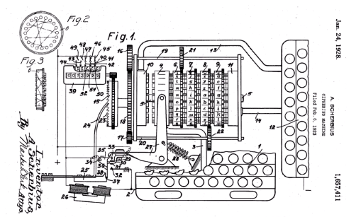
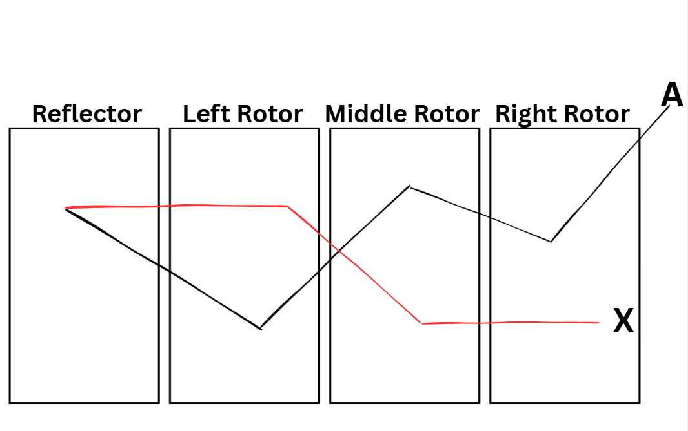

History Details About The Enigma Machine
The Enigma machine is a cipher device that was made to project encrypted communications during the early-to-mid 20th century. The first Engima machine, to be produced, was created by a German engineer named Arthur Scherbius. Arthur Scherbius invented the first Enigma machine at the end of World War I. The Enigma machine was used by military and intelligence agencies of several different countries , but it was most notably used by Nazi Germany before, and during the events of World War II. Below resembles Enigma US Patent 1,657,411, by Scherbius, from February 6, 1923.

Components of the Enigma Machine
The Enigma machine is made up of five components, and I will go into detail what each of these components do.
- Keyboard
- Lamp board
- Rotors
- Reflector
- Plugboard
Keyboard Component
The keyboard component of the Enigma machine acts as the system's input mechanism. It features 26 keys corresponding to the Latin alphabet, allowing the operator to type the message letter by letter to initiate the electrical encryption process.
Lamp board Component
The lamp board component serves as the visual output display. It contains 26 lettered bulbs that illuminate to reveal the encrypted result of each keystroke. Due to the Enigma machine's wiring, the lit letter will never match the key that was pressed from the keyboard.
Rotors
The Enigma machine comes equipped with a set of three, five, or eight rotors, which are labeled I-VIII. The Enigma machine can hold up to three-four rotors at a time, depending on the given model. Cipher Labs only features rotor's I-V and holds three rotors. All rotors are composed of 26 unique scrambled letters from the English alphabet, and they all differ from one another. Each rotor also features an adjustable letter ring with a notch, and each given notch mechanically steps the adjacent rotor forward, constantly altering the electrical circuit with every keystroke. When a key is input from the keyboard, a signal is sent to the rightmost rotor or wheel, through to the leftmost rotor, making contact with the given reflector (we’ll go over that later), then makes way from the reflector, back through the leftmost rotor to the rightmost rotor. Mechanically, the rightmost rotor makes a single step with each keystroke. After 26 keys have been pressed, its notch triggers the stepping motion of the adjacent rotor. To get an idea of what each rotor's wiring or alphabet and letter notch was, take a look at these figures. Now rotors are allowed to have key settings and can only have a length of three letters. If my keyword was say "CAT", the left rotor's starting letter would be "C", the middle rotor's starting letter would be "A", and the right rotor's starting letter would be "T".
Reflector
Think of the reflector as non-rotating rotor. Like rotors, reflectors are composed of 26 unique scrambled letters from the English alphabet, but don't contain any notches like the rotors do. To get an idea of what each reflector's wiring or alphabet was, take a look at the bottom table, from the link above. Cipher Labs allows you to pick Reflectors A, B, or C.
Enigma Action
Below illustrates how the letter “A” would be encrypted as the letter X, with an Enigma machine, if the rotors and reflector were put in place. The letter “A” is the typed input from the keyboard, then the letter “A” travels from the rightmost rotor to the middle rotor, to the left rotor, then to the reflector, and then the signal makes its way back from the reflector, to the rightmost rotor, giving you your encrypted letter, in this case "X".

Plugboard
The plugboard acts as a primary switchboard for the Enigma machine. It allowed operators to route specific inputs to desired outputs. Say if I configured the plugboard's following bigram pairs "AB CD EF", this would allow the following to happen:
- A would route to the letter B
- C would route to the letter D
- E would route to the letter F
This would swap the input letter typed from the keyboard, to the correlated letter assigned with it in the plugboard, pretty much swapping the letters before making its way to the very first rotor.
Putting all the Components Together

Sources
- Cryptography For Everyone. (2020, Feb. 6). Enigma Machine – Part 1 of 2 – How does it work? [Video]. YouTube. https://www.youtube.com/watch?v=FG59my_HLtI
- Enigma Rotor Details (2025, February 19). In Wikipedia. https://en.wikipedia.org/wiki/Enigma_rotor_details#Rotor_wiring_tables
- Dade, L. (2006). Enigma machine overview [Diagram]. Cornell University ECE 4760. https://people.ece.cornell.edu/land/courses/ece4760/FinalProjects/f2021/tdt46_vp237_yw446/tdt46_vp237_yw446/img/internals.jpg
- Mammeri , Z. (2024). Cryptography Algorithms, Protocols, and Standards for Computer Security. Wiley.
- Scherbius, A. (1928). Ciphering machine (U.S. Patent No. 1,657,411). U.S. Patent and Trademark Office.